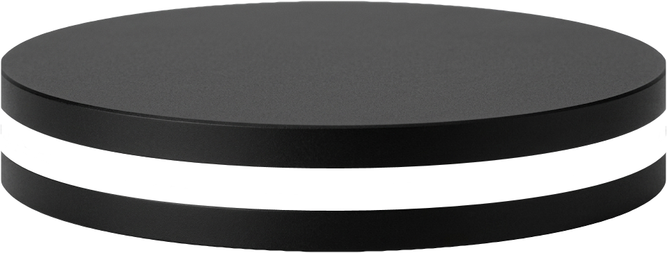
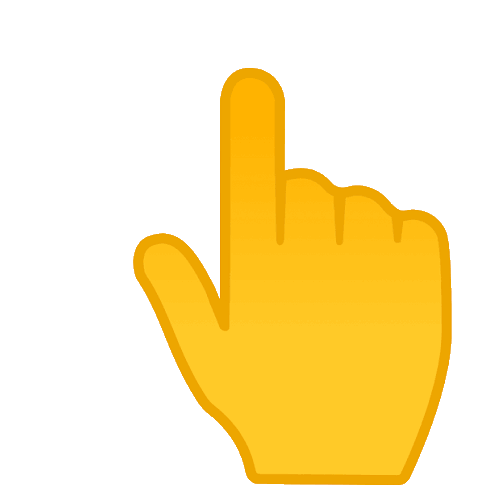
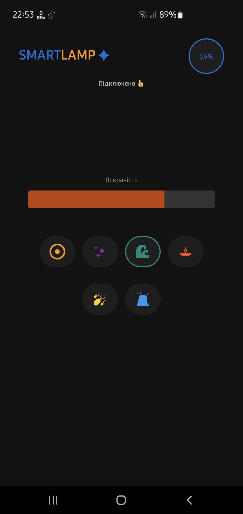

Прив’яжіть додаток
Ввімкніть Bluetooth на смартфоні. Затисніть сенсорну кнопку на вашому нічнику до появи синього світіння і після цього додатком починайте пошук нічника.

Огляд пристрою
Нічник потрібно прив’язувати лише один раз. Надалі він автоматично буде під’єднуватися. Щоб відв’язати - затисніть кнопку приєднання.

Огляд додатку
Ви можете перемикатися між режимами і міняти яскравість. Також слідкуйте за зарядом акумулятора. При критичному заряді нічник горітиме червоним.

Режими світильника
Поставте нічник на стіл або повісьте на стіну та вибирайте режим на свій смак! Кнопка на нічнику слугує для перемикання режимів(коротке натискання).

Кастомізація підсвітки
Деякі режими можна кастомізувати: зручна палітра для вибору будь-якого відтінку. Просто натисніть на кнопку режиму ще раз.

Динамічні анімації
Режими "Космос", "СтробосКоп" та "Веселка" також Вам сподобаються.